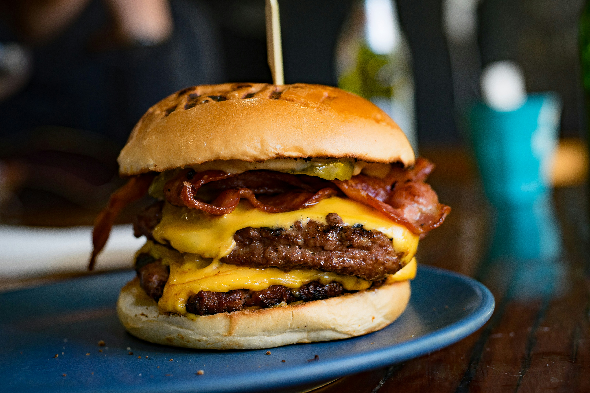

Smash Burger Recipe

Description
This easy smashburger recipe will satisfy that craving for restaurant style burgers, without having to spend big. In just under 30 minutes you can have quality burgers
for the whole family.
Ingredients
- One pack of your desired hamburger buns
- 16 oz of ground beef for two burgers, or 32 oz for four
- One pack of American cheese
- Your choice of seasoning blend or salt and pepper
- One jar of pickles
- Two strips of bacon per burger
- Your choice of sauce or dressing
Steps
- Using a skillet or flat top grill, turn your burner up to medium-high to pre-heat.
- Divide your ground beef into 4 oz sections, and ball them up into 4 oz balls.
- Once your skillet is hot, place the bacon and let cook until crispy.
- Once the bacon is crispy, remove it and place your buns directly on the leftover bacon grease to toast. This should only take a minute.
- Remove your buns and get ready to smash your burgers! Place your burger balls on your skillet a few inches apart.
- Using a smasher, a pan will work if you don't have one, smash each burger ball firmly until flat.
- Once smashed, season your burgers thuroughly on the face up side.
- After a minute or two, flip your burgers and place a slice of american cheese on each.
- Once your cheese is melted, your burgers are done! Smash burgers are quick because they are so thin.
- Now stack your pattys by twos and arrange them on your buns, topping with that bacon from earlier.
- Sauce your top buns and finish off with your pickles. Enjoy your burgers!
Home